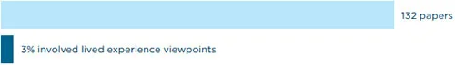

<!DOCTYPE html>
<html lang="en">

<head>
	<meta charset="UTF-8">
	<meta http-equiv="X-UA-Compatible" content="IE=edge">
	<meta name="viewport" content="width=device-width, initial-scale=1">
	<link rel="stylesheet" href="css/style.css">
	<link rel="stylesheet" href="css/responsive.css">
	<link rel="stylesheet" href="css/bootstrap5.css">
	<title>Digital Futures in Mind</title>
</head>

<body>

	<!-- Menu Area -->
<header class="navigation">
	<div class="container menu-bar">
		<div class="navbar-brand"><a href="index.html"></a></div>
		<ul class="navbar">
			<!-- Dropdown-1 -->
			<li>
				<a href="introduction.html">Introduction <span class="dropdown"></span></a>
				<ul>
				  <li><a href="structure.html">0.1 Structure</a></li>
				  <li><a href="how-was-the-report-written.html">0.2 How was the Report Written?</a></li>
				  <li><a href="what-recommendations-does-the-report-make.html">0.3 What Recommendations Does the Report Make?</a></li>
				  <li><a href="a-note-on-terminology.html">0.4 A Note on Terminology</a></li>
				  <li><a href="minding-language-about-mental-health-and-technology.html">0.5 Minding Language about Mental Health and Technology</a></li>
				</ul>
			  </li>
			 <!-- Dropdown-2 -->
			 <li>
				<a href="rising-automation-in-mental-health.html">Rising Automation in Mental Health <span class="dropdown"></span></a>
				<ul>
				  <li><a href="crisis-support-and-mental-health-care.html">1.1 What are the different ways technology is used in crisis support and mental health care?</a></li>
				  <li><a href="benefits-noted-in-research.html">1.2 Benefits Noted in Research</a></li>
				  <li>
					<a href="psychiatric-intervention-and-Other-coercive-measures.html" >1.3 Digitising Involuntary Psychiatric Intervention and Other Coercive Measures <span class="dropdown"></span></a>
					<ul>
					  <li><a href="ai-based-suicide-alerts-and-self-harm-surveillance.html">1.3.1 AI-based Suicide Alerts and Self-harm Surveillance</a></li>
					  <li><a href="digitising-mental-health-law.html">1.3.2 ‘Digitising mental health law’</a></li>
					  <li><a href="power-and-coercion-in-mental-health.html">1.3.3 Power and Coercion in Mental Health</a></li>
					</ul>
				  </li>
				  <li>
					<a href="biometric-monitoring-technologies.html">1.4 Biometric Monitoring Technologies <span class="dropdown"></span></a>
					<ul>
					  <li><a href="biometric-and-digital-turn.html">1.4.1 Power and Justice in the Biometric and Digital Turn</a></li>
					  <li><a href="biometric-monitoring-in-mental-health-settings.html">1.4.2 Governing the Future of Biometric Monitoring in Mental Health Settings</a></li>
					</ul>
				  </li>
				  <li><a href="experience-of-extreme-distress-and-disability.html">1.5 Elevating the Perspective of People with Lived Experience of Extreme Distress and Disability</a></li>
				</ul>
			  </li>
			<!-- Dropdown-3 -->
			  <li>
				<a href="themes-for-public-governance.html">Themes for Public Governance <span class="dropdown"></span></a>
				<ul>
				  <li>
					<a href="privacy.html">2.1 Privacy <span class="dropdown"></span></a>
					<ul >
					  <li><a href="ad-tech-and-predictive-public-health-surveillance.html">2.1.1 Ad-Tech and Predictive Public Health Surveillance</a></li>
					  <li><a href="privacy-and-monetisation-of-sensitive-personal-data.html">2.1.2 Privacy and Monetisation of Sensitive Personal Data</a></li>
					  <li><a href="data-theft-and-data-trafficking.html">2.1.3 Data Theft and Data Trafficking</a></li>
					  <li><a href="privacy-and-discrimination.html">2.1.4 Privacy and Discrimination</a></li>
					  <li><a href="data-protection-law.html">2.1.5 Data Protection Law</a></li>
					  <li><a href="informed-consent.html">2.1.6 Informed Consent</a></li>
					</ul>
				  </li>
				  <li>
					<a href="accountability.html" >2.2 Accountability <span class="dropdown"></span></a>
					<ul >
					  <li><a href="privatisation-and-accountability.html">2.2.1 Privatisation and Accountability</a></li>
					</ul>
				  </li>
				  <li>
					<a href="safety-and-security.html">2.3 Safety and security <span class="dropdown"></span></a>
					<ul >
					  <li><a href="safety.html">2.3.1 Safety</a></li>
						<li><a href="security.html">2.3.2 Security</a></li>
					</ul>
				  </li>
				  <li>
					<a href="non-discrimination-and-equity.html">2.4 Non-Discrimination and Equity <span class="dropdown"></span></a>
					<ul >
					  <li><a href="non-discrimination-and-the-prevention-of-bias.html">2.4.1 Non-discrimination and the Prevention of Bias</a></li>
						<li><a href="fairness.html">2.4.2 Fairness</a></li>
							<li><a href="equality.html">2.4.3 Equality</a></li>
								<li><a href="inclusive-design.html">2.4.4 Inclusive Design – Emancipatory? Participatory?</a></li>
									<li><a href="access-to-technology.html">2.4.5 Access to Technology</a></li>
					</ul>
				  </li>
				  <li>
					<a href="human-control-of-technology.html">2.5 Human control of technology <span class="dropdown"></span></a>
					<ul >
					  <li><a href="human-review-of-automated-decision.html">2.5.1 Human Review of Automated Decision</a></li>
						<li><a href="automated-decision-making.html">2.5.2 Ability to Opt-Out of Automated Decision-Making</a></li>
					</ul>
				  </li>
				  <li>
					<a href="professional-responsibility.html">2.6 Professional responsibility <span class="dropdown"></span></a>
					<ul >
					  <li><a href="multi-disciplinary-and-participatory-collaboration.html">2.6.1 Multi-disciplinary and Participatory Collaboration</a></li>
						<li><a href="scientific-integrity.html">2.6.2 Scientific Integrity and Testing Claims</a></li>
							<li><a href="techno-solutionism.html">2.6.3 Against Hype and ‘Techno-solutionism’</a></li>
								<li><a href="responsible-design.html">2.6.4 Responsible Design, Including Consideration of Long-Term Effects</a></li>
					</ul>
				  </li>
				  <li>
					<a href="transparency-and-explainability.html">2.7 Transparency and explainability <span class="dropdown"></span></a>
					<ul >
					  <li><a href="open-source-data-and-algorithms.html">2.7.1 Open-Source Data and Algorithms</a></li>
						<li><a href="other-issues-of-transparency-and-explainability.html">2.7.2 Other Issues of Transparency and Explainability</a></li>
					</ul>
				  </li>
				  <li>
					<a href="public-interest-and-societal-good.html">2.8 Promotion of Public Interest and Societal Good <span class="dropdown"></span></a>
					<ul >
					  <li><a href="automation.html">2.8.1 Automation, Undermining Face-to-Face Care, and the Risk of Depersonalisation</a></li>
						<li><a href="expanding-the-frame.html">2.8.2 Expanding the Frame from the Individual to the Social</a></li>
					</ul>
				  </li>
				  <li><a href="international-human-rights.html">2.9 International Human Rights</a></li>
				  <li><a href="future-efforts.html">2.10 Future Efforts</a></li>

				</ul>
			  </li>
		</ul>
		<div class="input-box">
			<input type="text" placeholder="" />
			<div class="search">
				
			</div>
			
		</div>
</div>
</header>
<!-- =========Mobile Menu============ -->
<header class="mobile-menu">
	<a href="index.html"></a>
	<input type="checkbox" id="main-nav-check" />
<div id="menu">
<label for="main-nav-check" class="toggle" onclick="" title="Close">&times;</label>
<ul>
	<li><a href="index.html">Home</a></li>
	<li><a href="introduction.html">Introduction</a> <label for="fof" class="toggle-sub" onclick=""><svg height="20" viewBox="0 0 48 48" width="20" xmlns="http://www.w3.org/2000/svg"><path d="M17.17 32.92l9.17-9.17-9.17-9.17 2.83-2.83 12 12-12 12z"/><path d="M0-.25h48v48h-48z" fill="none"/></svg></label>
		<input type="checkbox" id="fof" class="sub-nav-check" />
		<ul id="fof-sub" class="sub-nav">
			<li class="sub-heading">Introduction <label for="fof" class="toggle" onclick="" title="Back"><svg height="20" viewBox="0 0 48 48" width="20" xmlns="http://www.w3.org/2000/svg"><path d="M17.17 32.92l9.17-9.17-9.17-9.17 2.83-2.83 12 12-12 12z"/><path d="M0-.25h48v48h-48z" fill="none"/></svg></label></li>
			<li><a href="structure.html">0.1 Structure</a></li>
			<li><a href="how-was-the-report-written.html">0.2 How was the Report Written?</a></li>
			<li><a href="what-recommendations-does-the-report-make.html">0.3 What Recommendations Does the Report Make?</a></li>
			<li><a href="a-note-on-terminology.html">0.4 A Note on Terminology</a></li>
			<li><a href="minding-language-about-mental-health-and-technology.html">0.5 Minding Language about Mental Health and Technology</a></li>
		</ul>
	</li>
	<li><a href="rising-automation-in-mental-health.html">Rising Automation in Mental Health</a> <label for="fast-apps" class="toggle-sub" onclick=""><svg height="20" viewBox="0 0 48 48" width="20" xmlns="http://www.w3.org/2000/svg"><path d="M17.17 32.92l9.17-9.17-9.17-9.17 2.83-2.83 12 12-12 12z"/><path d="M0-.25h48v48h-48z" fill="none"/></svg></label>
		<input type="checkbox" id="fast-apps" class="sub-nav-check" />
		<ul id="fast-apps-sub" class="sub-nav">
			<li class="sub-heading">Rising Automation in Mental Health <label for="fast-apps" class="toggle" onclick="" title="Back"><svg height="20" viewBox="0 0 48 48" width="20" xmlns="http://www.w3.org/2000/svg"><path d="M17.17 32.92l9.17-9.17-9.17-9.17 2.83-2.83 12 12-12 12z"/><path d="M0-.25h48v48h-48z" fill="none"/></svg></label></li>
			<li><a href="crisis-support-and-mental-health-care.html">1.1 What are the different ways technology is used in crisis support and mental health care?</a></li>
			<li><a href="benefits-noted-in-research.html">1.2 Benefits Noted in Research</a></li>
			<li><a href="psychiatric-intervention-and-Other-coercive-measures.html">1.3 Digitising Involuntary Psychiatric Intervention and Other Coercive Measures</a> <label for="fof-portfolio" class="toggle-sub" onclick=""><svg height="20" viewBox="0 0 48 48" width="20" xmlns="http://www.w3.org/2000/svg"><path d="M17.17 32.92l9.17-9.17-9.17-9.17 2.83-2.83 12 12-12 12z"/><path d="M0-.25h48v48h-48z" fill="none"/></svg></label>
				<input type="checkbox" id="fof-portfolio" class="sub-nav-check" />
				<ul id="fof-portfolio-sub" class="sub-nav">
					<li class="sub-heading">1.3 Digitising Involuntary Psychiatric Intervention and Other Coercive Measures <label for="fof-portfolio" class="toggle" onclick="" title="Back"><svg height="20" viewBox="0 0 48 48" width="20" xmlns="http://www.w3.org/2000/svg"><path d="M17.17 32.92l9.17-9.17-9.17-9.17 2.83-2.83 12 12-12 12z"/><path d="M0-.25h48v48h-48z" fill="none"/></svg></label></li>
					<li><a href="ai-based-suicide-alerts-and-self-harm-surveillance.html">1.3.1 AI-based Suicide Alerts and Self-harm Surveillance</a></li>
					<li><a href="digitising-mental-health-law.html">1.3.2 ‘Digitising mental health law’</a></li>
					<li><a href="power-and-coercion-in-mental-health.html">1.3.3 Power and Coercion in Mental Health</a></li>
				</ul>
			</li>
			<li><a href="biometric-monitoring-technologies.html">1.4 Biometric Monitoring Technologies</a> <label for="fof-services" class="toggle-sub" onclick=""><svg height="20" viewBox="0 0 48 48" width="20" xmlns="http://www.w3.org/2000/svg"><path d="M17.17 32.92l9.17-9.17-9.17-9.17 2.83-2.83 12 12-12 12z"/><path d="M0-.25h48v48h-48z" fill="none"/></svg></label>
				<input type="checkbox" id="fof-services" class="sub-nav-check" />
				<ul id="fof-services-sub" class="sub-nav">
					<li class="sub-heading">1.4 Biometric Monitoring Technologies <label for="fof-services" class="toggle" onclick="" title="Back"><svg height="20" viewBox="0 0 48 48" width="20" xmlns="http://www.w3.org/2000/svg"><path d="M17.17 32.92l9.17-9.17-9.17-9.17 2.83-2.83 12 12-12 12z"/><path d="M0-.25h48v48h-48z" fill="none"/></svg></label></li>
					<li><a href="biometric-and-digital-turn.html">1.4.1 Power and Justice in the Biometric and Digital Turn</a></li>
					<li><a href="biometric-monitoring-in-mental-health-settings.html">1.4.2 Governing the Future of Biometric Monitoring in Mental Health Settings</a></li>
				</ul>
			</li>
			<li><a href="experience-of-extreme-distress-and-disability.html">1.5 Elevating the Perspective of People with Lived Experience of Extreme Distress and Disability</a></li>
		</ul>
	</li>
	<li><a href="themes-for-public-governance.html">Themes for Public Governance</a> <label for="public-apps" class="toggle-sub" onclick=""><svg height="20" viewBox="0 0 48 48" width="20" xmlns="http://www.w3.org/2000/svg"><path d="M17.17 32.92l9.17-9.17-9.17-9.17 2.83-2.83 12 12-12 12z"/><path d="M0-.25h48v48h-48z" fill="none"/></svg></label>
		<input type="checkbox" id="public-apps" class="sub-nav-check" />
		<ul id="public-apps-sub" class="sub-nav">
			<li class="sub-heading">Themes for Public Governance<label for="public-apps" class="toggle" onclick="" title="Back"><svg height="20" viewBox="0 0 48 48" width="20" xmlns="http://www.w3.org/2000/svg"><path d="M17.17 32.92l9.17-9.17-9.17-9.17 2.83-2.83 12 12-12 12z"/><path d="M0-.25h48v48h-48z" fill="none"/></svg></label></li>
			<li><a href="privacy.html">2.1 Privacy</a> <label for="public-portfolio" class="toggle-sub" onclick=""><svg height="20" viewBox="0 0 48 48" width="20" xmlns="http://www.w3.org/2000/svg"><path d="M17.17 32.92l9.17-9.17-9.17-9.17 2.83-2.83 12 12-12 12z"/><path d="M0-.25h48v48h-48z" fill="none"/></svg></label>
				<input type="checkbox" id="public-portfolio" class="sub-nav-check" />
				<ul id="public-portfolio-sub" class="sub-nav">
					<li class="sub-heading">2.1 Privacy <label for="public-portfolio" class="toggle" onclick="" title="Back"><svg height="20" viewBox="0 0 48 48" width="20" xmlns="http://www.w3.org/2000/svg"><path d="M17.17 32.92l9.17-9.17-9.17-9.17 2.83-2.83 12 12-12 12z"/><path d="M0-.25h48v48h-48z" fill="none"/></svg></label></li>
					<li><a href="ad-tech-and-predictive-public-health-surveillance.html">2.1.1 Ad-Tech and Predictive Public Health Surveillance</a></li>
					<li><a href="privacy-and-monetisation-of-sensitive-personal-data.html">2.1.2 Privacy and Monetisation of Sensitive Personal Data</a></li>
					<li><a href="data-theft-and-data-trafficking.html">2.1.3 Data Theft and Data Trafficking</a></li>
					<li><a href="privacy-and-discrimination.html">2.1.4 Privacy and Discrimination</a></li>
					<li><a href="data-protection-law.html">2.1.5 Data Protection Law</a></li>
					<li><a href="informed-consent.html">2.1.6 Informed Consent</a></li>
				</ul>
			</li>
			<li><a href="accountability.html">2.2 Accountability</a> <label for="public-acc" class="toggle-sub" onclick=""><svg height="20" viewBox="0 0 48 48" width="20" xmlns="http://www.w3.org/2000/svg"><path d="M17.17 32.92l9.17-9.17-9.17-9.17 2.83-2.83 12 12-12 12z"/><path d="M0-.25h48v48h-48z" fill="none"/></svg></label>
				<input type="checkbox" id="public-acc" class="sub-nav-check" />
				<ul id="public-acc-sub" class="sub-nav">
					<li class="sub-heading">2.2 Accountability <label for="public-acc" class="toggle" onclick="" title="Back"><svg height="20" viewBox="0 0 48 48" width="20" xmlns="http://www.w3.org/2000/svg"><path d="M17.17 32.92l9.17-9.17-9.17-9.17 2.83-2.83 12 12-12 12z"/><path d="M0-.25h48v48h-48z" fill="none"/></svg></label></li>
					<li><a href="privatisation-and-accountability.html">2.2.1 Privatisation and Accountability</a></li>
				</ul>
			</li>
			<li><a href="safety-and-security.html">2.3 Safety and security</a> <label for="public-Safety-security" class="toggle-sub" onclick=""><svg height="20" viewBox="0 0 48 48" width="20" xmlns="http://www.w3.org/2000/svg"><path d="M17.17 32.92l9.17-9.17-9.17-9.17 2.83-2.83 12 12-12 12z"/><path d="M0-.25h48v48h-48z" fill="none"/></svg></label>
				<input type="checkbox" id="public-Safety-security" class="sub-nav-check" />
				<ul id="public-Safety-security-sub" class="sub-nav">
					<li class="sub-heading">2.2 Accountability <label for="public-Safety-security" class="toggle" onclick="" title="Back"><svg height="20" viewBox="0 0 48 48" width="20" xmlns="http://www.w3.org/2000/svg"><path d="M17.17 32.92l9.17-9.17-9.17-9.17 2.83-2.83 12 12-12 12z"/><path d="M0-.25h48v48h-48z" fill="none"/></svg></label></li>
					<li><a href="safety.html">2.3.1 Safety</a></li>
					<li><a href="security.html">2.3.2 Security</a></li>
				</ul>
			</li>
			<li><a href="non-discrimination-and-equity.html">2.4 Non-Discrimination and Equity</a> <label for="public-equity" class="toggle-sub" onclick=""><svg height="20" viewBox="0 0 48 48" width="20" xmlns="http://www.w3.org/2000/svg"><path d="M17.17 32.92l9.17-9.17-9.17-9.17 2.83-2.83 12 12-12 12z"/><path d="M0-.25h48v48h-48z" fill="none"/></svg></label>
				<input type="checkbox" id="public-equity" class="sub-nav-check" />
				<ul id="public-equity-sub" class="sub-nav">
					<li class="sub-heading">2.4 Non-Discrimination and Equity <label for="public-equity" class="toggle" onclick="" title="Back"><svg height="20" viewBox="0 0 48 48" width="20" xmlns="http://www.w3.org/2000/svg"><path d="M17.17 32.92l9.17-9.17-9.17-9.17 2.83-2.83 12 12-12 12z"/><path d="M0-.25h48v48h-48z" fill="none"/></svg></label></li>
					<li><a href="non-discrimination-and-the-prevention-of-bias.html">2.4.1 Non-discrimination and the Prevention of Bias</a></li>
					<li><a href="fairness.html">2.4.2 Fairness</a></li>
					<li><a href="equality.html">2.4.3 Equality</a></li>
					<li><a href="inclusive-design.html">2.4.4 Inclusive Design – Emancipatory? Participatory?</a></li>
					<li><a href="access-to-technology.html">2.4.5 Access to Technology</a></li>
				</ul>
			</li>

			<li><a href="human-control-of-technology.html">2.5 Human control of technology</a> <label for="public-human" class="toggle-sub" onclick=""><svg height="20" viewBox="0 0 48 48" width="20" xmlns="http://www.w3.org/2000/svg"><path d="M17.17 32.92l9.17-9.17-9.17-9.17 2.83-2.83 12 12-12 12z"/><path d="M0-.25h48v48h-48z" fill="none"/></svg></label>
				<input type="checkbox" id="public-human" class="sub-nav-check" />
				<ul id="public-human-sub" class="sub-nav">
					<li class="sub-heading">2.5 Human control of technology <label for="public-human" class="toggle" onclick="" title="Back"><svg height="20" viewBox="0 0 48 48" width="20" xmlns="http://www.w3.org/2000/svg"><path d="M17.17 32.92l9.17-9.17-9.17-9.17 2.83-2.83 12 12-12 12z"/><path d="M0-.25h48v48h-48z" fill="none"/></svg></label></li>
					<li><a href="human-review-of-automated-decision.html">2.5.1 Human Review of Automated Decision</a></li>
					<li><a href="automated-decision-making.html">2.5.2 Ability to Opt-Out of Automated Decision-Making</a></li>
				</ul>
			</li>
			<li><a href="professional-responsibility.html">2.6 Professional responsibility</a> <label for="public-profess" class="toggle-sub" onclick=""><svg height="20" viewBox="0 0 48 48" width="20" xmlns="http://www.w3.org/2000/svg"><path d="M17.17 32.92l9.17-9.17-9.17-9.17 2.83-2.83 12 12-12 12z"/><path d="M0-.25h48v48h-48z" fill="none"/></svg></label>
				<input type="checkbox" id="public-profess" class="sub-nav-check" />
				<ul id="public-profess-sub" class="sub-nav">
					<li class="sub-heading">>2.6 Professional responsibility <label for="public-profess" class="toggle" onclick="" title="Back"><svg height="20" viewBox="0 0 48 48" width="20" xmlns="http://www.w3.org/2000/svg"><path d="M17.17 32.92l9.17-9.17-9.17-9.17 2.83-2.83 12 12-12 12z"/><path d="M0-.25h48v48h-48z" fill="none"/></svg></label></li>
					<li><a href="multi-disciplinary-and-participatory-collaboration.html">2.6.1 Multi-disciplinary and Participatory Collaboration</a></li>
					<li><a href="scientific-integrity.html">2.6.2 Scientific Integrity and Testing Claims</a></li>
					<li><a href="techno-solutionism.html">2.6.3 Against Hype and ‘Techno-solutionism’</a></li>
					<li><a href="responsible-design.html">2.6.4 Responsible Design, Including Consideration of Long-Term Effects</a></li>
				</ul>
			</li>
			<li><a href="transparency-and-explainability.html">2.7 Transparency and explainability</a> <label for="public-trans" class="toggle-sub" onclick=""><svg height="20" viewBox="0 0 48 48" width="20" xmlns="http://www.w3.org/2000/svg"><path d="M17.17 32.92l9.17-9.17-9.17-9.17 2.83-2.83 12 12-12 12z"/><path d="M0-.25h48v48h-48z" fill="none"/></svg></label>
				<input type="checkbox" id="public-trans" class="sub-nav-check" />
				<ul id="public-trans-sub" class="sub-nav">
					<li class="sub-heading">2.7 Transparency and explainability <label for="public-trans" class="toggle" onclick="" title="Back"><svg height="20" viewBox="0 0 48 48" width="20" xmlns="http://www.w3.org/2000/svg"><path d="M17.17 32.92l9.17-9.17-9.17-9.17 2.83-2.83 12 12-12 12z"/><path d="M0-.25h48v48h-48z" fill="none"/></svg></label></li>
					<li><a href="open-source-data-and-algorithms.html">2.7.1 Open-Source Data and Algorithms</a></li>
					<li><a href="other-issues-of-transparency-and-explainability.html">2.7.2 Other Issues of Transparency and Explainability</a></li>
				</ul>
			</li>
			<li><a href="public-interest-and-societal-good.html">2.8 Promotion of Public Interest and Societal Good</a> <label for="public-promo" class="toggle-sub" onclick=""><svg height="20" viewBox="0 0 48 48" width="20" xmlns="http://www.w3.org/2000/svg"><path d="M17.17 32.92l9.17-9.17-9.17-9.17 2.83-2.83 12 12-12 12z"/><path d="M0-.25h48v48h-48z" fill="none"/></svg></label>
				<input type="checkbox" id="public-promo" class="sub-nav-check" />
				<ul id="public-promo-sub" class="sub-nav">
					<li class="sub-heading">2.8 Promotion of Public Interest and Societal Good <label for="public-promo" class="toggle" onclick="" title="Back"><svg height="20" viewBox="0 0 48 48" width="20" xmlns="http://www.w3.org/2000/svg"><path d="M17.17 32.92l9.17-9.17-9.17-9.17 2.83-2.83 12 12-12 12z"/><path d="M0-.25h48v48h-48z" fill="none"/></svg></label></li>
					<li><a href="automation.html">2.8.1 Automation, Undermining Face-to-Face Care, and the Risk of Depersonalisation</a></li>
					<li><a href="expanding-the-frame.html">2.8.2 Expanding the Frame from the Individual to the Social</a></li>
				</ul>
			</li>
			<li><a href="international-human-rights.html">2.9 International Human Rights</a></li>
			<li><a href="future-efforts.html">2.10 Future Efforts</a></li>
		</ul>
	</li>

</ul>
<div class="input-box">
	<input type="text" placeholder="" />
	<div class="search">
		
	</div>
	
</div>
</div>
<div id="header">
	<label for="main-nav-check" class="toggle" onclick="" title="Menu">&#x2261;</label>
</div><!-- closing "#header" -->
</header>
	<!-- Content Area -->
	<div class="container">
		<div class="row">
			<main>
				<aside class="col-lg-3 col-12 sidebar-left">
					<ol>
						<li>
							<a href="about.html">About</a>
						</li>
						<li>
							<a href="foreword.html">Foreword</a>
						</li>
						<li>
							<a href="introduction.html">Introduction</a>
						</li>
						<li>
							<a href="recommendations.html">Recommendations</a>
						</li>
						<li>
							<a href="note-on-terminology.html">A note on Terminology</a>
						</li>
						<li>
							<a href="rising-automation-in-mental-health.html">Rising Automation in Mental Health</a>
						</li>
						<li>
							<a href="digitising-involuntary-psychiatric-intervention.html">digitising Involuntary Psychiatric Intervention</a>
						</li>
						<li>
							<a href="biometric-monitoring-technologies.html">Biometric Monitoring Technologies</a>
						</li>
						<li>
							<a href="distress-and-disability.html" class="active">Elevating the Perspective of People with Lived Experience of Extreme Distress and Disability</a>
						</li>
						<li>
							<a href="themes-for-public-governance.html">Themes for Public Governance</a>
						</li>
						<li>
							<a href="conclusion.html">Conclusion</a>
						</li>
					</ol>
				</aside>
				<section class="col-lg-9 col-12 sidebar-middle">
					<div class="content-pane2">
						<h2 id="part-test5">1.5 Elevating the Perspective of People with Lived Experience
							of Extreme Distress and Disability</h2>
						<div class="neon-blue-txt">As mental health advocates, we work to ensure there is “nothing
							about us without us.” What happens when our voice is missing from
							the system? Well, very bad things. In the name of treatment, we’ve
							experienced injustice, neglect, and abuse.<br />
							- Kelechi Ubozoh<sup>162</sup></div>
						<p>For many decades, people with lived experience of distress and mental health issues
							have had a profound impact on rethinking and rearranging societal responses to mental
							health and distress.<sup>163</sup> In policy and practice, this group has altered service provision and
							prompted policy change and law reform. Quite outside of traditional services they have
							established forms of mutual aid and community development to help people in personal
							crisis, profound distress and extreme states of consciousness. In research, service user and
							survivors and representative groups have challenged traditional research assumptions,
							theories and methods, developed ethical frameworks and aligned their work to other
							social movements. All of this has contributed greatly to the development of knowledge
							about distress, mental health, illness and disability.<sup>164</sup></p>
						<p>The involvement of diverse groups of people with firsthand experience in mental health
							services in research typically affects how that research is undertaken, including the
							empirical and conceptual approaches that are chosen, and what is produced. Yet, in many
							public documents celebrating the positive potential of digital technologies in mental
							healthcare, there is a concerning lack of partnership with people with firsthand experience
							of mental health services and their representative organisations.<sup>165</sup> In a 2021 survey,
							Piers Gooding and Timothy Kariotis reviewed all applied studies that used algorithmic
							and data-driven technologies in ‘online mental health interventions’.<sup>166</sup> Of the 132 papers
							in the survey, only four (or 3% of the field captured in the survey) appeared to involve
							people who have used mental health services, or those who have lived experience or
							psychosocial disability, in the design, evaluation or implementation of the proposals in any
							substantive way (Refer to Figure 1). The studies demonstrated ‘a near-complete exclusion
							of service users in the conceptualisation or development of algorithmic and data-driven
							technologies’ and their application to mental health services.<sup>167</sup> This pattern conforms with
							a longstanding marginalisation of lived experience perspectives in academic research.<sup>168</sup></p>
						<p><strong>Figure 1: The field captured in the survey of ‘online mental health’ studies</strong></p>
						<p></p>
						
						<p>Exclusion does not define all initiatives in the field. Indeed, there are good examples of
							technological responses that have been designed with a high level of active input by
							those most affected by the Technology<sup>169</sup>. There are also several data-driven technologies
							initiated and led by people with lived experience of distress and mental health services,<sup>170</sup>
							including a growing range of ‘digital peer support measures’ around the world.<sup>171</sup></p>

						<div class="skydivbox">
							<h2>CASE STUDY: ‘CommonGround’</h2>
							<p>‘CommonGround’ is an example of a digital decision-making aid to help facilitate
								communication and share information between those accessing services and
								those providing them and can help people navigate through service options.
								CommonGround is a computer-interface presented in the waiting rooms of mental
								health settings and elsewhere, as a ‘a web application to support shared decision
								making in the psychopharmacology consultation’.<sup>172</sup> CommonGround was developed
								by Patricia Deegan, a disability-rights advocate, psychologist and researcher who
								draws explicitly on her experience as a mental health service user. Service users are
								invited by a peer worker – that is, someone engaged to draw on their lived experience
								of mental health crisis, mental health service use, and so on – to complete a preconsultation report about their personal preferences and values before meeting with
								a medical professional. This may include contextual information, such as the person’s
								aims and values recorded in her/his own words, or her/his preferred activities to
								promote wellness and recovery.<sup>173</sup></p>
						</div>
						<p></p>
						<p><i>Hello Human, Hello Machine by Rachel Hanlon, Dr Johanne Trippas, Dr Matthew Gardiner, and
								Jess Coldrey in Science Gallery Melbourne’s MENTAL. Photo by Alan Weedon. This version was
								developed in collaboration with Dr Johanne Trippas. Five members of Sci-Curious: Eli/Elena
								McGannon, Annabel Yenson, Claire Price, Jess Coldrey and Joseph Doggett-Williams. Creative
								technical assistance from Dr Matthew Gardiner</i></p>
								
						<p>Other initiatives promote mutual forms of peer support and community development</p>
						<div class="skydivbox">
							<h2>CASE STUDY: Virtual Support Network, Kenya</h2>
							<p>In Kenya, a volunteer-run ‘virtual support network’ emerged from the advocacy
								organisation Users and Survivors of Psychiatry in Kenya (USP Kenya) and has been
								running for several years.<sup>174</sup> There are 8 administrators and 200+ members.<sup>175</sup> Most
								members are individuals who have accessed mental health services themselves,
								but there are also members who are family members, caregivers, psychologists and
								counsellors.<sup>176</sup> The network communicates on a mainstream messenger service and is
								described in a USP Kenya report as being ‘fully community-based, operat[ing] outside
								Kenya’s mental health system and [not linked] to any mental health institution’.177
								The peer support involves crisis support for individual members, regular face-toface meetups, information sharing, the generation of fundraising for individual
								members who are in financial crisis (particularly following the COVID-19 pandemic),
								the connecting of individuals to local community organisations, and so on.178 New
								members are provided with guidelines for participation and content moderation.
								Some basic advance-planning is provided whereby members can indicate what type
								of support they would like during future crises, including family contact information,
								but not all members wish to share this information. Some members have not shared
								their mental health diagnosis publicly beyond the group and prioritise privacy. The
								network receives no funding</p>
						</div>
						<p>Informal initiatives such as the Kenyan virtual support network may not make it into the
							public spotlight in the same way governments, health practitioners, large NGOs, and
							private sector actors do. Nor may they deploy AI or other ‘cutting edge’ technologies.
							Yet, they often warrant resources or further research to determine how and why they are
							working (if indeed they are) and how they can be supported. </p>
						<p>Other peer-led initiatives use data-driven technologies in systemic advocacy and the
							monitoring of state-run services.</p>

						<div class="skydivbox">
							<h2>CASE STUDY: Open Data Advocacy and Public Monitoring of Disability Services</h2>
							<p>In 2021, a Canadian coalition of open data advocacy groups in collaboration with
								disabled people’s organisations aimed to crowd-source a database of congregate
								institutions for disabled people in Canada, which included people with psychosocial
								disabilities. They aimed to trace the impact of COVID-19 on disabled people and
								prioritise vaccinations. A collaboration between open data groups led to a public
								event in which members of the public could join an online initiative to ‘Hack the Data
								Gap’ and create an up-to-date database of relevant residential facilities.<sup>179</sup></p>
						</div>
						
						<p>However, despite some good examples, there are concerning signs that much activity
							in academia, the market and government have not adopted the standard of active
							involvement of people with lived experience.<sup>180</sup></p>
						<p>Furthermore, of the little commentary and scholarship by people with lived experience
							that does exist, most commentators tend to be more ambivalent about digital
							technology’s role in mental healthcare and crisis responses than those in government,
							industry and professional bodies. These diverse and varied viewpoints will be discussed
							throughout this report.</p>
						<p>Ultimately, our report is premised on the view that active involvement of those most
							impacted by algorithmic and data-driven technologies should not be seen merely as
							a matter of ‘stakeholder engagement’, but rather as an ethical orientation. This ethos
							requires a stronger social and political commitment by actors involved in digitising mental
							health initiatives to avoid the pitfalls of past research that was ‘done to’ and not with or by
							people who are primarily impacted.</p>
						<p>Thoughtful, participatory design is also likely to result in higher quality technological
							practices that better meet the needs and preferences of those for whom they are
							designed. Without it, there is a greater likelihood of costly technologies being introduced
							in an unthinking manner, created to address one issue without sufficient thought to
							harmful flow-on consequences. According to Dainius Pūras, the former UN Special
							Rapporteur on the Right to the Highest Quality Physical and Mental Health:</p>
						<div class="benifit-box">
							<ul>
								<li>participation of persons with mental health conditions, including persons with
									disabilities, in the planning, monitoring and evaluation of services, in system
									strengthening and in research, is now more widely recognized as a way to improve
									the quality, accessibility and availability of services and the strengthening of mental
									health systems.<sup>181</sup></li>
							</ul>
						</div>
						<p>Diverse parts of the international social movement of disabled people have also advocated
							along these lines, as have multiple international and national human rights agencies.<sup>182</sup></p>
						<p>Harms perpetuated in the name of mental health care in the past offer a cautionary
							tale for any proposed solutions in mental health services today that exclude affected
							populations. Clarence Sundram has written of widespread abuse and violence perpetrated
							in recent times, in which people deemed mentally, intellectually and cognitively impaired
							in some way were subject to cruel, inhuman and degrading treatment of various kinds.183
							This included arbitrary detention without legal process (sometimes for life), forced
							sterilisation, being chained and caged, confinement to squalid conditions in institutions,
							the use of painful medicines and procedures, irreversible surgical interventions, and
							medical experimentation against individuals’ wishes, including experimentation with no
							intended benefit for the person.</p>
							
						<p>This history recalls that harms in the name of care have occurred in living memory,
							some of which continue today (as discussed throughout Part 2). Many people who have
							experienced distress, psychosis, psychosocial disability and so on, have had negative,
							violative and dismissive experiences in mental health services—even as many have had
							positive experiences.184 Several commentators with a range of experiences with mental
							health services have demanded that the digital turn must not extend or exacerbate these
							historical patterns of harm, even if that means proceeding cautiously.<sup>185</sup></p>
						<div class="skydivbox">
							<h2>CASE STUDY: The Halting of an App by the UK Mental Health Foundation</h2>
							<p>David Crepaz-Keay, the Head of Applied Learning at the UK Mental Health
								Foundation reported that an app being developed by the Mental Health Foundation
								to assist mental health service users was indefinitely halted during an internal
								consultation process, after service user advisors raised serious concerns. Concerns
								included privacy being compromised and the possibility of individuals’ data
								being shared with companies and government agencies, including criminal justice
								agencies.<sup>186</sup></p>
						</div>
						<p>The consequences of poorly designed algorithmic and digital technologies to assist people
							in mental health crises will be borne by people who have engaged with mental health
							services, or who live with distress, illness and disability. Hence, these groups must be
							actively involved in governance of algorithmic and data-driven technology in the mental
							health context. Jonah Bossewitch puts it succinctly when he writes: ‘It is possible to redirect
							this wizardly technology to help support people better. Doing this well starts with inclusive
							design—people with lived experience need to be involved in planning and shaping the
							systems meant to support them. Nothing about us without us.’<sup>187</sup></p>
							
						To draw out the various issues raised by the rise of automation in the mental health
						context, the remainder of this report is ordered around the following inter-related themes,
						or ethical and political values:
						
						<div class="sm-txt">
								<ul>
									<li>162 Green and Ubozoh (n 17).</li>
									<li>163 Ibid.</li>
									<li>164 Jasna Russo and Stephanie Wooley, ‘The Implementation of the Convention on the Rights of Persons with Disabilities’ (2020) 22(1) Health
										and Human Rights 151; Robyn Brown and Nev Jones, ‘The Absence of Psychiatric C/S/X Perspectives In Academic Discourse: Consequences and
										Implications’ (2012) 33 Disability Studies Quarterly.</li>
									<li>165 Sarah Carr, ‘“AI Gone Mental”: Engagement and Ethics in Data-Driven Technology for Mental Health’ (2020) 0(0) Journal of Mental Health
										1; Til Wykes, ‘Racing towards a Digital Paradise or a Digital Hell?’ (2019) 28(1) Journal of Mental Health 1.</li>
									<li>166 Gooding and Kariotis (n 43).</li>
									<li>167 Ibid.</li>
									<li>168 Brown and Jones (n 166).</li>
							<li>169 See eg., John Torous et al, ‘Creating a Digital Health Smartphone App and Digital Phenotyping Platform for Mental Health and Diverse
								Healthcare Needs: An Interdisciplinary and Collaborative Approach’ (2019) 4(2) Journal of Technology in Behavioral Science 73.</li>
							<li>170 Patricia E Deegan et al, ‘Best Practices: A Program to Support Shared Decision Making in an Outpatient Psychiatric Medication Clinic’
								(2008) 59(6) Psychiatric Services 603.</li>
							<li>171 Karen L Fortuna et al, ‘Digital Peer Support Mental Health Interventions for People With a Lived Experience of a Serious Mental Illness:
								Systematic Review’ (2020) 7(4) JMIR Mental Health e16460.</li>
							<li>172 Ibid.</li>
							<li>173 Deegan et al (n 172)</li>
									<li>174 USP Kenya, The Role of Peer Support in Exercising Legal Capacity (Nairobi, 2018) 18 <a href="http://www.uspkenya.org/wp-content/uploads/2018/01/Role-of-Peer-Support-in-Exercising-Legal-Capacity.pdf">http://www.uspkenya.org/wp-content/uploads/2018/01/Role-of-Peer-Support-in-Exercising-Legal-Capacity.pdf</a>; Transforming communities for Inclusion, Asia, Summary Report on
										Transforming Communities for Inclusion - Asia: Working Towards TCI - Asia Strategy Development (Asia-Pacific Development Centre on Disability,
										June 2015) <a href="www.apcdfoundation.org/?q=system/files/TCI%20Asia%20Report_Readable%20PDF.pdf">www.apcdfoundation.org/?q=system/files/TCI%20Asia%20Report_Readable%20PDF.pdf</a> accessed 5 May 2016.</li>
									<li>175 Videocall discussion between the author and Ms Ann Njambi and Ms Charity Muturi (18/08/2021).</li>
									<li>176 Ibid.</li>
									<li>177 USP Kenya, The Role of Peer Support in Exercising Legal Capacity (Nairobi, 2018) 18 <a href="http://www.uspkenya.org/wp-content/uploads/2018/01/Role-of-Peer-Support-in-Exercising-Legal-Capacity.pdf">http://www.uspkenya.org/wp-content/uploads/2018/01/Role-of-Peer-Support-in-Exercising-Legal-Capacity.pdf</a>; Transforming communities for Inclusion, Asia, Summary Report on
										Transforming Communities for Inclusion - Asia: Working Towards TCI - Asia Strategy Development (Asia-Pacific Development Centre on Disability,
										June 2015) <a href="www.apcdfoundation.org/?q=system/files/TCI%20Asia%20Report_Readable%20PDF.pdf">www.apcdfoundation.org/?q=system/files/TCI%20Asia%20Report_Readable%20PDF.pdf</a> accessed 5 May 2016.</li>
									<li>178 Ibid.</li>
									<li>179 <a href="http://datalibre.ca/2021/02/18/invisible-people-and-institutions-no-data-about-custodial-institutions-for-disabled-people-in-canada/">http://datalibre.ca/2021/02/18/invisible-people-and-institutions-no-data-about-custodial-institutions-for-disabled-people-in-canada/</a>
										[accessed 17/03/2021]</li>
								<li>180 Carr (n 53); Wykes (n 167); Gooding and Kariotis (n 43).</li>
								<li>181 See eg, Human Rights Council, ‘Report of the Special Rapporteur on the Right of Everyone to the Enjoyment of the Highest
									Attainable Standard of Physical and Mental Health’ para [13] <a href="https://primarysources.brillonline.com/browse/human-rights-documents-online/promotion-and-protection-of-all-human-rights-civil-political-economic-social-and-cultural-rights-including-the-right-to-development;hrdhrd99702016149">https://primarysources.brillonline.com/browse/human-rights-documents-online/promotion-and-protection-of-all-human-rights-civil-political-economic-social-and-cultural-rights-including-the-right-to-development;hrdhrd99702016149</a>.</li>
								<li>182 Australian Human Rights Commission, Human Rights and Technology - Final Report (Australian Human Rights Commission, 2021) <a href="https://tech.humanrights.gov.au/sites/default/files/2021-05/AHRC_RightsTech_2021_Final_Report.pdf">https://tech.humanrights.gov.au/sites/default/files/2021-05/AHRC_RightsTech_2021_Final_Report.pdf</a>; Theresia Degener, ‘Disability in a Human
									Rights Context’ (2016) 5(3) Laws 35.</li>
								<li>183 Clarence Sundram, ‘In Harm’s Way: Research Subjects Who Are Decisionally Impaired’ (1998) 36(1) Journal of Health Care Law and Policy</li>
								<li>184 See Andrea Daley, Lucy Costa and Peter Beresford (eds), Madness, Violence, and Power: A Critical Collection (University of Toronto Press,
									Illustrated edition, 2019).</li>
								<li>185 Harris, ‘The Rise of the Digital Asylum’ (n 121); Bossewitch, ‘Brave New Apps’ (n 121); Carr (n 53).</li>
								<li>186 Privacy International, Your Mental Health for Sale? (6 November 2020) <a href="https://www.youtube.com/watch?v=Sbsw51OrvBU&list=UUwyKZWhsD2YFg8huOaO3IOg&ab_channel=PrivacyInternational">https://www.youtube.com/watch?v=Sbsw51OrvBU&list=UUwyKZWhsD2YFg8huOaO3IOg&ab_channel=PrivacyInternational</a>.</li>
								<li>187 Bossewitch, ‘Brave New Apps’ (n 121)</li>
							</ul>
							</div>
					</div>
				</section>
			</main>
		</div>
	</div>
	<!-- Footer Area -->
	<footer>
		<article class="foot-top">
			<div class="container">
				<div class="row">
					<div class="foot-top-area">
						<div class="arrow-plc">
							<a href="index.html" rel="prev">
							<div class="icon-area">
								<svg xmlns="http://www.w3.org/2000/svg" width="18.414" height="12.828" viewBox="0 0 18.414 12.828">
									<g id="Group_11" data-name="Group 11" transform="translate(282.914 497.914) rotate(180)">
									  <line id="Line_1" data-name="Line 1" x2="16" transform="translate(265.5 491.5)" fill="none" stroke="#fff" stroke-linecap="round" stroke-width="2"/>
									  <line id="Line_2" data-name="Line 2" x2="5" y2="5" transform="translate(276.5 486.5)" fill="none" stroke="#fff" stroke-linecap="round" stroke-width="2"/>
									  <line id="Line_3" data-name="Line 3" y1="5" x2="5" transform="translate(276.5 491.5)" fill="none" stroke="#fff" stroke-linecap="round" stroke-width="2"/>
									</g>
								  </svg>
							</div>
							<div class="foot-title prev">
								<div class="foot-direction"><a href="biometric-monitoring-technologies.html">Previous</a></div>
								<div class="foot-link"><a href="biometric-monitoring-technologies.html">Biometric Monitoring Technologies</a></div>
							</div>
							</a>
						</div>
						<div class="arrow-plc">
							<a rel="next">
								<div class="foot-title next">
									<div class="foot-direction"><a href="themes-for-public-governance.html">Next</a></div>
									<div class="foot-link"><a href="themes-for-public-governance.html">Themes for Public Governance</a></div>
								</div>
								<div class="icon-area">
									<svg xmlns="http://www.w3.org/2000/svg" width="18.414" height="12.828" viewBox="0 0 18.414 12.828">
										<g id="Group_11" data-name="Group 11" transform="translate(1 1.414)">
										  <line id="Line_1" data-name="Line 1" x2="16" transform="translate(0 5)" fill="none" stroke="#fff" stroke-linecap="round" stroke-width="2"/>
										  <line id="Line_2" data-name="Line 2" y1="5" x2="5" transform="translate(11 5)" fill="none" stroke="#fff" stroke-linecap="round" stroke-width="2"/>
										  <line id="Line_3" data-name="Line 3" x2="5" y2="5" transform="translate(11)" fill="none" stroke="#fff" stroke-linecap="round" stroke-width="2"/>
										</g>
									  </svg>
								</div>
							</a>
						</div>
				</div>
					</div>
					</div>
		</article>
		<article class="foot-bottom"><a href="https://www.suncoastwebsolutions.com.au/services/web-design">Website Design</a> | <a href="https://www.suncoastwebsolutions.com.au/services/domain-web-hosting">Website Hosting</a> | Copyright © 2023 All rights reserved​ <a href="#">Digital Futures in Mind</a></article>
		<div class="scroll-to-top-btn"><svg viewBox="0 0 32 32" xmlns="http://www.w3.org/2000/svg"><defs><style>.cls-1{fill:none;stroke:#fff;stroke-linecap:round;stroke-linejoin:round;stroke-width:2px;}</style></defs><title/><g id="arrow-top"><line class="cls-1" x1="15.87" x2="16.13" y1="3" y2="29"/><line class="cls-1" x1="15.87" x2="20.91" y1="3" y2="6.95"/><line class="cls-1" x1="15.87" x2="10.91" y1="3" y2="7.05"/></g></svg></div>
</footer>
	
	
<script src="js/jquery.min.js"></script>
<script src="js/bootstrap5.js"></script>
<script src="js/global.js"></script>

</body>

</html>